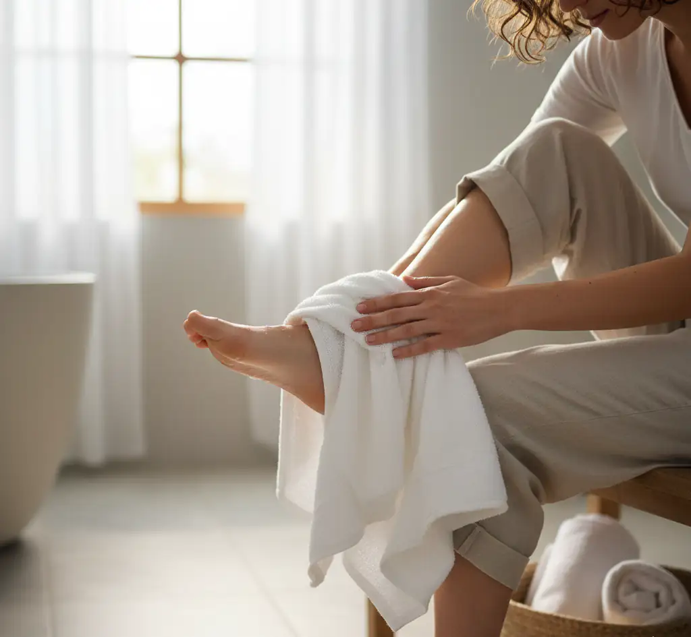

1. Rutina Diaria de Higiene para Pies Saludables

Una correcta higiene es el pilar fundamental para prevenir infecciones, mal olor y otros problemas comunes. Dedicarle unos minutos al día a tus pies es una inversión en tu salud general.
Lava tus pies diariamente con agua tibia y un jabón de pH neutro. Evita el agua muy caliente, ya que puede resecar la piel. Presta especial atención a los espacios entre los dedos, una zona propensa a la acumulación de humedad y hongos.
Pasos para una higiene correcta:
- Secado minucioso: Después de lavar, seca tus pies completamente, sobre todo entre los dedos. La humedad es el caldo de cultivo perfecto para los hongos.
- Hidratación: Aplica una crema hidratante específica para pies por la noche. Evita aplicarla entre los dedos para no generar un exceso de humedad.
- Calcetines limpios: Usa calcetines de fibras naturales como el algodón o la lana y cámbialos a diario.